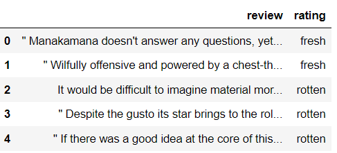

Contents
To build a Naive Bayes classifier we need to follow these steps addressed below:
- Prepare the Dataset
- Preprocessing the data set
- Building Naive Bayes model
- Evaluation/Prediction
- Effect of Smoothing
- Top 10 words that predict each class
- Technical challenges
Preparing the dataset
We can use google collab or jupyter notebook to build this classifier. Today we are going to build it in our local machine, so we download the data set and place our dataset .csv file in our directory and open it with file handling in python.
- Firstly, we are going to seperate the rating and review index wise to 2 lists and then creating a dataframe from it. Since the csv file has a lot of text in it, it was not possible to use pd.read_csv("rt_reviews.csv") as it had many commas in it and the function was not able to seperate it properly. I build a small algorithm to seperate reviews and rating and then created a dataframe out of it.
- Now, we split the data into train,validation and test set for us to train, tuning the parameters and testing our model. Below is the code for the split from scratch.
review=[]
rating=[]
with open('rt_reviews.csv', 'r', encoding='iso-8859-1') as file:
for ind,line in enumerate(file):
if ind!=0:
rat=line.split(',')[0]
rating.append(rat)
if rat=='fresh':
review.append(line[6:]) #start from 5+',' letter
else:
review.append(line[7:])#start from 6+',' letter
df=pd.DataFrame(data)
df.head()

ratio_tuple=(70,15,15)
def split(data,ratio_tuple):
shuffled_df = df.sample(frac=1)#shuffling dataset
split_data=[] #index 0 training, index 1 tesing, index 2 development
for i in ratio_tuple:
split_data.append(shuffled[:int((shuffled.shape[0]*i)/100),:])
Data Preprocessing
Before creating the model, we need to preprocess the data i.e, cleaning the data so we can tokenize the reviews into unique words which do not have duplicates and special symbols which might affect the accuracy and predictions of the model. Not only we clean the data but also arrange it in desired datastructure to work on it with ease to build a model on it. Below I created 2 algorithms for preprocessing, one which removes all symbols in the reviews, another one to remove rare words which might affect our models accuraacy.
#removes all symbols in the statements/review
def remove_symbols(review,symbols=['\n','\t',':','"','.','[',']','?',')','(',',','-','$']):
for i in symbols:
review=review.replace(i,' ')
return review
#removes rare words less than 5 apperances
def remove_rare(dic):
rare_words=[]
for word in dic:
if dic[word]<6:
rare_words.append(word)
for rare in rare_words:
dic.pop(rare)
#creates bag of words dictionary for a given reviews/statements
def boggor(reviews):
dict_bow=dict()
syms=['\n','\t',':','"','.','[',']','?',')','(',',','-']
for review in reviews:
x=remove_symbols(review.lower())
x=x.split(" ")
processed_words=[i for i in x if i.strip()]
for word in processed_words:
if word in dict_bow:
dict_bow[word]+=1
else:
dict_bow[word]=1
return dict_bow
Building Naive Bayes Model
To build Naive Bayes model, we need all the probabilities to compute P( Hypothesis | Evidence ) in order to classify if our review is fresh or rotten.
The algorithm goes as follows:

- Compute the prior probabilities of classes (fresh,rotten)
- Compute the conditonal probababilities of each word given class P('word'|fresh) , P('word'|rotten)
- Compute the Posterior probababiliy which is

def fit(df):
fresh_reviews=df.review[df.rating=='fresh'].to_list()
rotten__reviews=df.review[df.rating=='rotten'].to_list()
#prior probs
fresh_prior,rotten_prior=prior(df)
#preprocess
fresh_dict=boggor(fresh_reviews)
rotten_dict=boggor(rotten_reviews)
remove_rare(fresh_dict)
remove_rare(rotten_dict)
#conditional probs
fresh_probs={}
for ind,word in enumerate(fresh_dict):
fresh_probs[word]=fresh_dict[word]/len(fresh_reviews)
rotten_probs={}
for ind,word in enumerate(rotten_dict):
rotten_probs[word]=rotten_dict[word]/len(rotten_reviews)
print("Calculated all parameters : 'priors and likelyhoods'")
return (fresh_prior,rotten_prior,fresh_probs,rotten_probs)
Evaluation/Prediction
After calculating posterior probabilites from prior and conditional probababilities, now we try to predict given review if its rotten or fresh. In Order to predict, we need to preprocess the given statement first in order to get the calculated probababilities from previous step.
- We get the review, we remove the symbols and convert it to lower case.
- Tokenize the words and retrieve calculated conditional probabilies along with prior probabilites.
- Use the reverse dictionary "bag of words" to get probabities in the given word and calculate the product of all the P(word|fresh) and P(word|rotten) using given formula.
- Compare posterior of both classes, the one with higher value is the predicted class.
def predict(df,NB,alpha=1):
pf,pr,f_probs,r_probs=NB
y_pred=[]
for ind,review in enumerate(df.review.to_list()):
x=remove_symbols(review).lower().split(' ') #lower case with no symbols
x=[i for i in x if i.strip()] #removing '' from list
x_fresh_probs=np.array([f_probs[i] if i in f_probs else alpha for i in x ])
x_rotten_probs=np.array([r_probs[i] if i in r_probs else alpha for i in x ])
if np.prod(x_fresh_probs)*pf>np.prod(x_rotten_probs)*pr:
y_pred.append('fresh')
else:
y_pred.append('rotten')
return y_pred
#calculating accuracy
def accuracy(y_pred,y):
matches = sum([1 if yp == ya else 0 for yp, ya in zip(y_pred, y)])
accuracy=matches/len(data)
return accuracy
#calculate accuracy of development set
data=dev_df
alpha=1
model=fit(df) #fitting on whole dataset
pf,pr,f_train,r_train=model
y_pred=predict(data,model,alpha)
y=data.rating.to_list()
acc=accuracy(y_pred,y)
print(f'accuracy of the model is {acc:.4f}')
>>output:
>>Calculated all parameters : 'priors and likelyhoods'
>>accuracy of the model is 0.6356
Effect of smoothing
Smoothing is a concept to help our Naive bayes model predict well.
Suppose, we have a new review with was never seen by the Naive Bayes method in training, which might contain a word which is just introduced.
Words which did not exist at the time of training the model have 0 frequency whose conditional probabilities is also 0, which affects the posteriors of both classes
which is a product of all conditionals therefore making our model ineffective.
Smoothing is a concept which helps the model to not break by adding a random value (1.0) as the new words conditional.
We get the predictions without any problem.
 Here when we predict without alpha we get an error of unknown key.
Here when we predict without alpha we get an error of unknown key.
Top 10 words that predict a class
Words with high conditional probability are the words which are the top predictors of a review, below code will get the top 10 fresh predicted and top 10 rotten predictors.
To tackle this situation we need to clear cache of google collab by using the below code , it collect all the garbage values and clears the cache.
#top 10 for fresh
dic=fit(df)
print("Top 10 Fresh")
sorted_items = sorted(dic[2].items(), key=lambda x: x[1], reverse=True)
for i in sorted_items[:10]:
print(i)
print("Top 10 Rotten")
sorted_items = sorted(dic[3].items(), key=lambda x: x[1], reverse=True)
for i in sorted_items[:10]:
print(i)
output:
>>
Top 10 Fresh
('the', 1.1488291666666666)
('a', 0.8281375)
('and', 0.7501625)
('of', 0.6948708333333333)
('to', 0.4419958333333333)
('is', 0.4178625)
('in', 0.339275)
('that', 0.2602083333333333)
('it', 0.25457083333333336)
('with', 0.20266666666666666)
Top 10 Rotten
('the', 1.1349875)
('a', 0.7486041666666666)
('of', 0.6061291666666667)
('and', 0.578875)
('to', 0.5100458333333333)
('is', 0.37812083333333335)
('in', 0.3035833333333333)
('it', 0.26813333333333333)
('that', 0.2623125)
('but', 0.20375833333333335)
Technical challenges
Some of the technical challenges I faced during the project:
- Cannot read_csv files beacause the text had multiple commas and it was difficult for the method to tackle the situation.
- Multiple values because of single quotes
Related links
Tutorial from the given link helped me understand more about the topic. Naive Bayes Explained